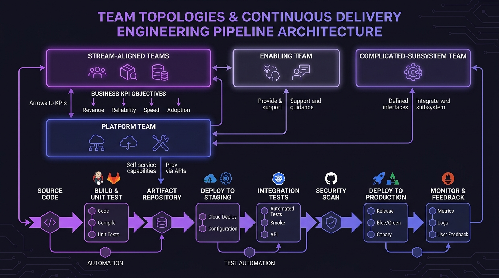

Fluxo Contínuo de Entrega:
Menos rituais de Sprints, mais software em produção com propósito
Sprints tradicionais de 15 a 30 dias tornaram-se desculpas corporativas para atrasos e acúmulo de entregas em lote. Na Hydra One, aplicamos Continuous Delivery com squads estruturadas com base em Team Topologies, onde cada commit é testado, automatizado e focado em gerar valor direto para o negócio.

Engenharia ágil de verdade vs. Burocracia disfarçada de ágil
O mercado acostumou empresas a esperar 3 semanas para ver o resultado de uma reunião. Nós trocamos cerimônias cansativas por deploys contínuos, automação pesada e foco obstinado em métricas financeiras e operacionais.
1. Foco em Propósito & Impacto de Negócio
Não medimos sucesso em "story points queimados". Medimos se a funcionalidade reduziu o custo de atendimento, aumentou a taxa de conversão, destravou novas vendas ou acelerou o carregamento do banco de dados.
- Cada entrega atende a um objetivo de negócio explícito (OKR/KPI)
- Transparência total em ambiente de staging compartilhado
- Engenheiros seniores que entendem o modelo financeiro do seu produto
2. Estrutura Baseada em Team Topologies
Inspirados na obra de referência de Matthew Skelton e Manuel Pais, organizamos a equipe para minimizar a carga cognitiva e eliminar silos operacionais:
- Stream-aligned: Squad dedicada ao fluxo de valor do produto
- Platform Team: Infraestrutura, automação e esteiras aceleradoras
- Enabling & Complicated-subsystem: Mentoria técnica e módulos complexos
3. Automação Extrema & CI/CD
Todo código inserido no repositório passa por dezenas de testes automáticos antes de ser integrado. Não dependemos de memória humana para garantir que nada foi quebrado.
- Testes unitários e de integração disparados a cada push
- Linters rigorosos e análise estática de código automatizada
- Ambientes de demonstração efêmeros criados dinamicamente
Sprints Tradicionais vs. Engenharia Contínua Hydra One
Compare a produtividade real de um time moderno de entrega contínua com os velhos hábitos do mercado.
A Armadilha das Sprints Burocráticas
- Reuniões diárias que viram prestação de contas exaustiva e improdutiva.
- O software só é integrado e testado no final do ciclo (batch release perigoso).
- Desenvolvedores focam em "fechar tarefas" mesmo que o recurso não resolva a dor do cliente.
- Qualquer mudança no meio da sprint exige "replanejar a sprint inteira".
Fluxo Contínuo & Team Topologies Hydra One
- Funcionalidades desenvolvidas, validadas e prontas para visualização a cada ciclo diário.
- Esteiras automatizadas de CI/CD realizam testes e verificam segurança a cada commit.
- Engenharia orientada a metas de negócio claras: retenção, conversão e estabilidade.
- Carga cognitiva reduzida e autonomia total das squads para entregar sem atrito.